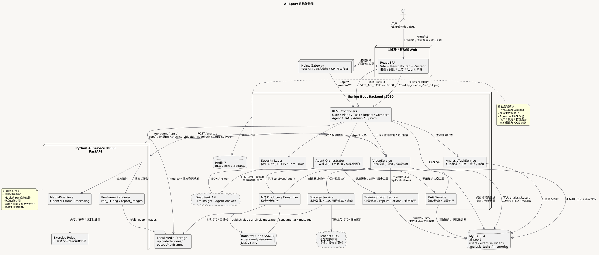
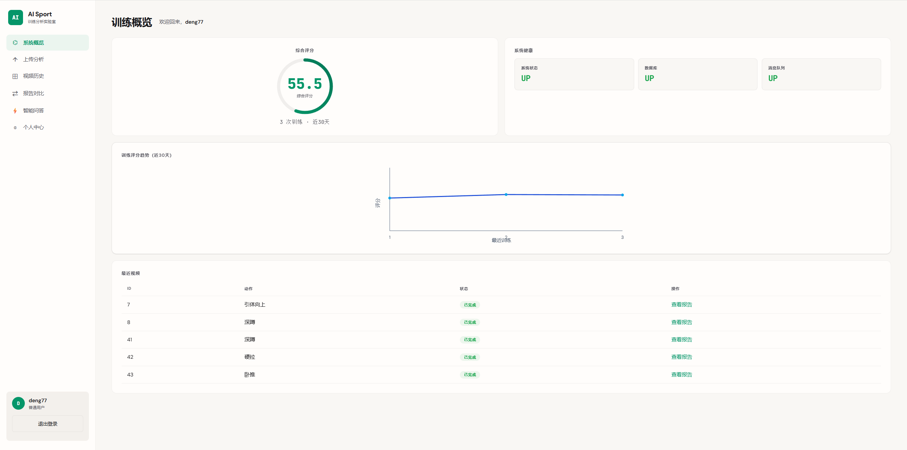
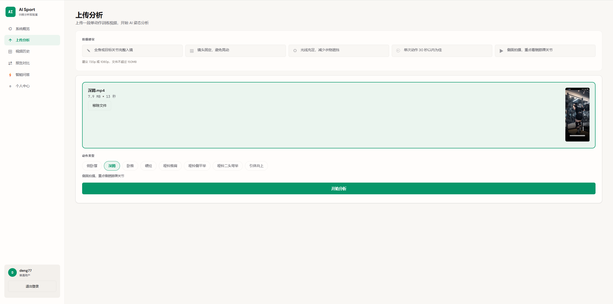
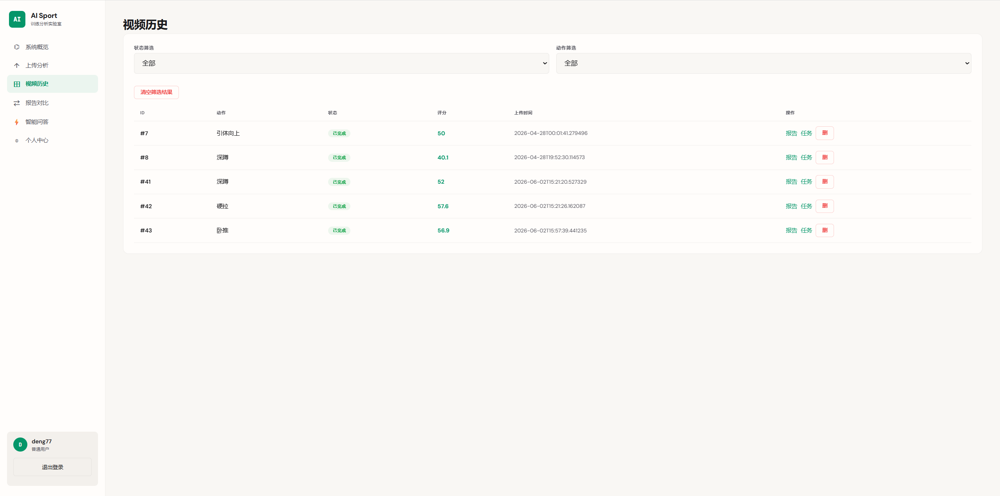
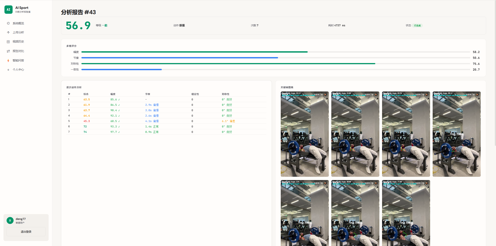
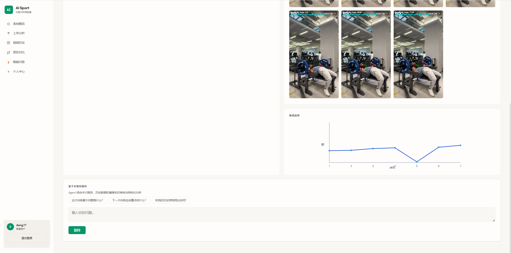
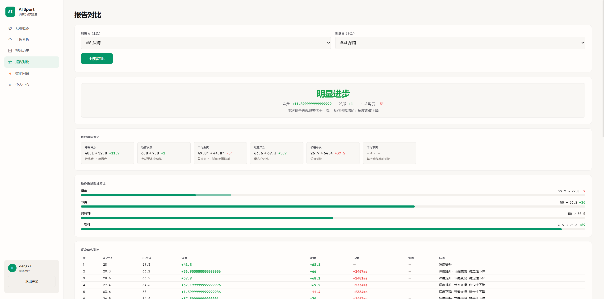

面向健身爱好者与运动训练场景，构建一套视频动作分析平台。用户上传健身视频后，系统异步进行AI姿态分析，生成动作评估报告、关键帧标注与中文建议，支持历史数据对比追踪。
设计前后端分离架构，前端React负责视频上传与多维度报告展示，后端SpringBoot管理业务逻辑与任务状态，通过RabbitMQ将上传与分析解耦。Python AI服务层基于MediaPipe实现健身动作的关键点检测、逐次动作的多维度评估（深度评分、节奏分析、稳定性计算、对称性对比），输出结构化分析结果与关键帧渲染。基于RAG框架+Agent编排器，集成知识搜索、分数趋势、训练历史、视频报告等工具，提供个性化问答并支持流式输出。使用腾讯云COS管理媒体资源，Redis缓存热点接口，Docker Compose实现一键启动开发环境。






